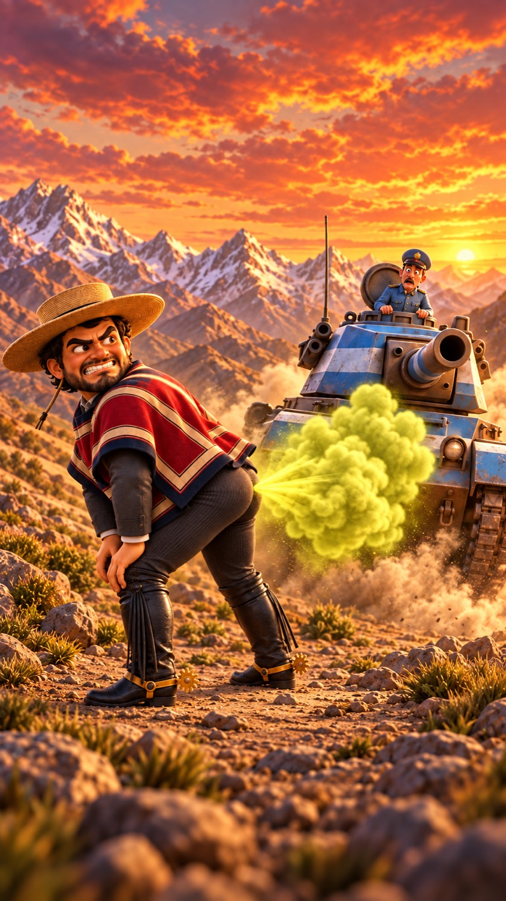
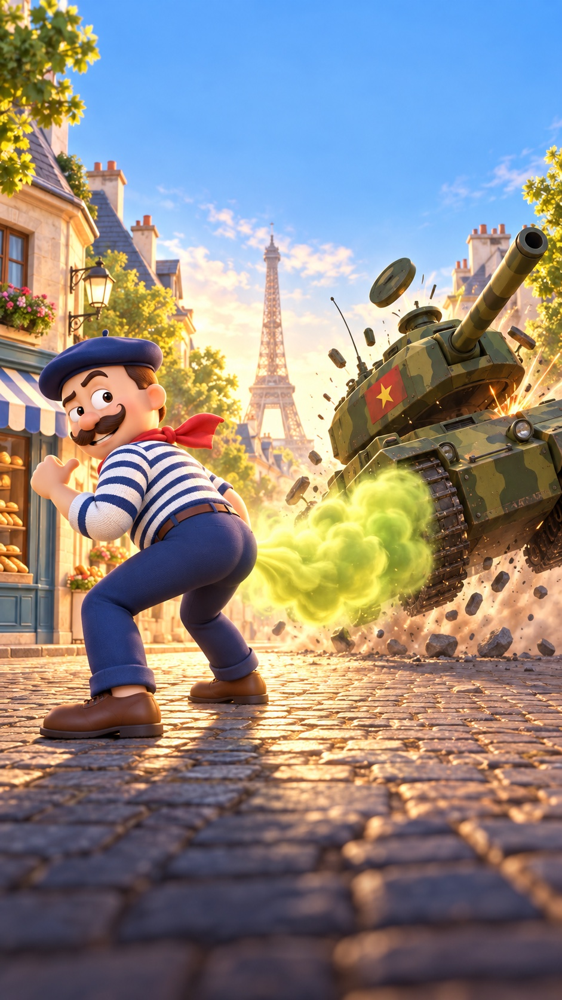

01 / LOS ANDESEN ESPAÑOL
EL HUASO
Chile
Harta comida. Cero rendición.
ELLOS TIENEN TANQUES. TÚ HAS COMIDO BIEN.
DOS PAÍSES · UNA DEFENSA POCO CONVENCIONAL

Harta comida. Cero rendición.

Bon appétit. Mauvaise nouvelle pour les tanks.